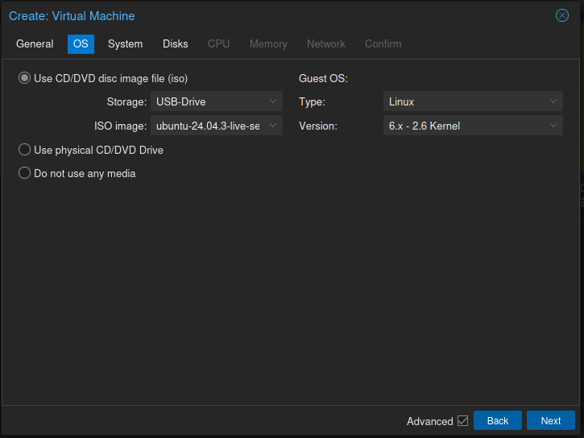
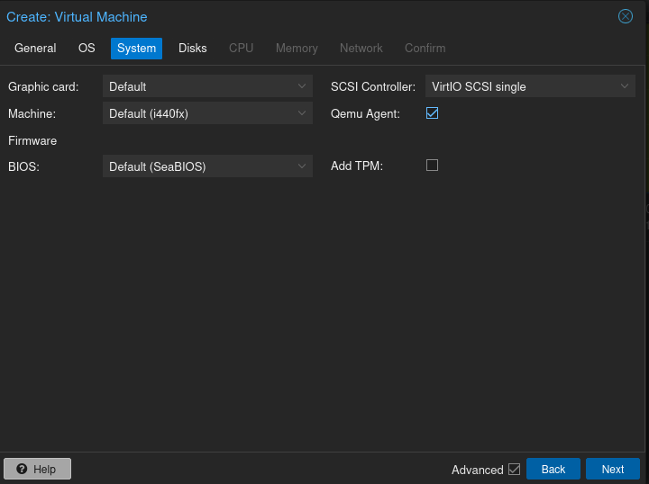
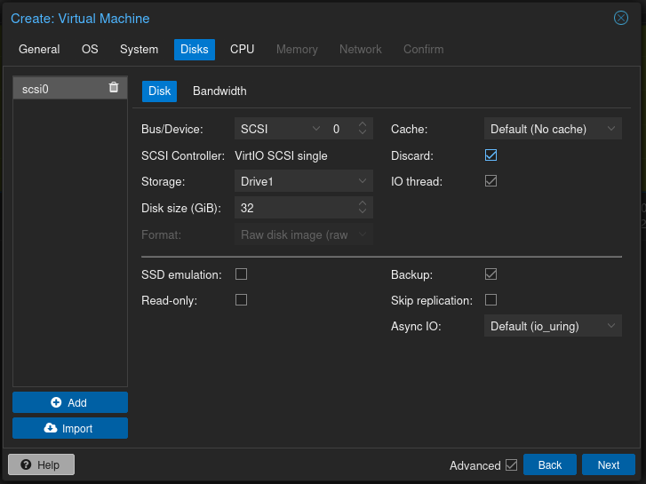
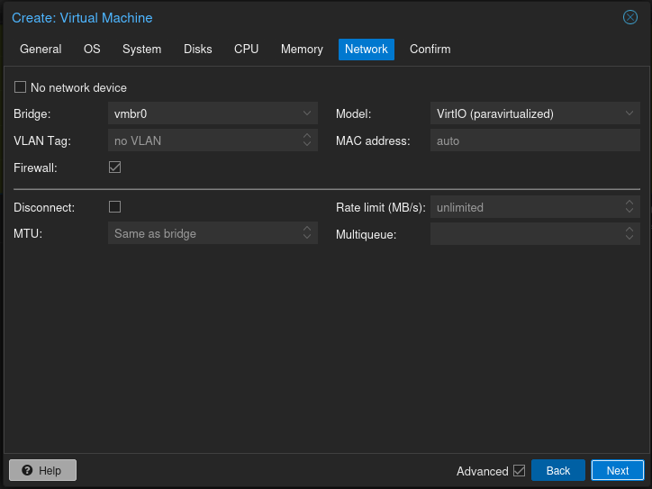
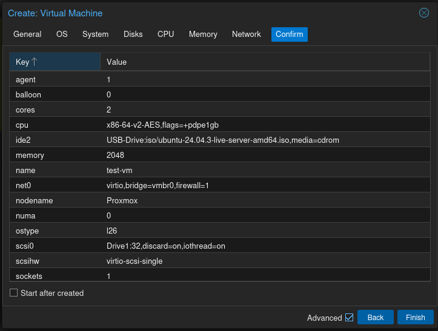

Create Virtual Machine
Create a new Ubuntu Server virtual machine in Proxmox.
Decide on which drive to use then click Create VM.
Upload ISO
Upload Ubuntu ISO to Proxmox storage.
Create System for VM
Leave at defaults, Enable Qemu Agent.
Configure Harddrive attributes.
Enable Discard this can help reclaim storage on SSDs and improves performance.
Configure CPU core's to be used
Set cores as per your PC capabilities and set type as Host.
You can enable 'Allow Guest OS to use 1GB size pages, if host HW allows it'
- CPU: 2 cores
Configure memory to be used
Set Memory as per your PC capabilities.
Allow or Disallow Ballooning
- Mem: 2048 MB
Configure Networking
Leave at default unless you have reason to change.
Confirm Selections
Go back if you wish to change anything.
Start VM
Click Finish and then start the virtual machine and begin the installation of Ubuntu Server.